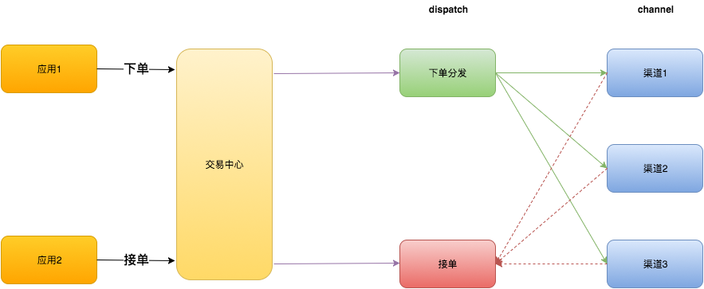

20171107接单系统设计
一、背景与问题
1.接单操作入口分散
2.dispatch task数量增长过快，1kw/月
3.模板配置容易出现问题
4.缺少业务监控
5.任务设计有些泛化
6.接单缺少系统管理后台
二、改进策略
1.接单系统主要职责(服务)划分为：订单分发以及接单操作。
1）提供接单服务
2）修改新订单分发服务为thrift，重新定义参数。
2.task横化、竖化
短期规划：
1）数据自动归档，目前是在DBA上手动申请任务，计划任务完成后自动归档。
2）非接单相关任务迁移至履约
长期规划：
PlanA：目前业务形态相对稳定，可以将大部分分发操作放在一个大横表中。
PlanB：任务执行情况下沉到各个渠道，或根据渠道划分业务表。
3.模板自动化测试
1）建立模板备选表，进行线上自动化测试，测试通过后同步到模板表
2）排列组合各种开关（优先开店宝、自动接单、ERP等），进行虚拟订单每个分发状态的计算，生成结果报告，分析正确性。
4.业务监控
1）接单入口业务监控打点，零流量监控
2）各渠道接单量打点，零流量监控
3）响应时间记录
5.领域模型重新review
TODO 重新收敛
6.接单系统管理后台
1）仪表盘：今日接单量、率、反馈时间、历史统计数据
2）模板配置等管理功能
3）订单轨迹查询
三、排期
| 方向 | 子任务 | 优先级 | 预计开始时间 | 预计结束时间 |
|---|---|---|---|---|
| 主要职能搭建 | 提供接单服务 | P1 | 11.13 | 11.15 |
| 主要职能搭建 | 推送使用方迁移 P1 | 11.16 | 11.24 | |
| 主要职能搭建 | 提供新的推单服务 | P1 | 11.16 | 11.17 |
| 解决Task增长问题 | 自动归档job | P2 | 11.20 | 11.22 |
| 解决Task增长问题 | 推动非接单相关事件迁移 | P2 | 待定 | 待定 |
| 模板自动化测试 | 自动化测试mock、测试过程设计与开发 | P3 | 11.23 | 11.28 |
| 业务监控 | 打点及配置监控，监控准确性测试 | P2 | 11.29 | 12.4 |
| 领域模型重新review | 对现有业务、过程做收敛，重新review领域模型 | P3 | 12.5 | 12.8 |
| 接单系统管理后台 | 仪表盘 | P3 | 12.11 | 12.15 |
| 接单系统管理后台 | 配置管理功能 | P3 | 12.18 | 12.20 |
| 接单系统管理后台 | 订单轨迹查询 | P3 | 12.21 | 12.27 |